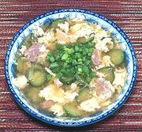

|
Cucumber Egg Flower SoupChina | ||||
| Makes: Effort: Sched: DoAhead: |
5 cups ** 40 min Most |
A pleasant and interesting soup, but it's a soup course soup, too light to be a main dish. It can be made also with Chicken, or even Beef, or firm Tofu for vegetarian. | |||
|
5 8 1-1/2 1 1 4 1 1 1/2 1/4 |
oz oz oz t c T t t t |
Pork, cooked (1) Cucumber (2) Leek (3) Egg Oil Stock (4) Rice Wine (5) Soy Sauce Salt Pepper |
PREP - (15 min)
|